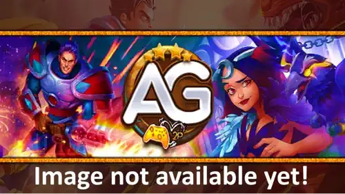

ヴァルドゥル攻略：スキル・スキン・チーム ヒーローウォーズ・アライアンス
- 著者：アレクサンドレ・ドミンゴス 。
敵を動かすことが、攻撃を当てることと同じくらい重要だとしたらどうだろう？「エラライトの声」であるヴァルドゥルは、戦場での位置変化を味方の好機に変える。私が考える本当の魅力は、召喚体の小さな攻撃だけに頼るのではなく、エラライトチーム全体をつなぐ点にある。
このガイドでは、生存中のエラライトの数が戦闘をどう変えるのか、物理攻撃に注目すべき理由、そして私なら何に優先して資源を使うかを解説する。メティダ、オーム、アレクト、パラントを育てているなら、ヴァルドゥルを加えることで、その投資に明確なチーム戦略が生まれる。

まず、直接ダメージとチームへの貢献を分けて考えよう。エラライトの子は敵を押し出し、引き寄せる。一方、エラライトの共鳴は、生存中のエラライトが多い編成ほど恩恵が大きい。そのため、味方を失うと、与えるダメージ以外の部分まで変わることがある。
以下の優先度は、記載されている仕組みに基づく私の評価だ。評価点は育成方針の目安であり、実測した勝率によるランキングではない。

📋 ヴァルドゥルの目次
ヒーローウォーズ・アライアンスのヴァルドゥルとは？
ヴァルドゥルは「エラライトの声」と呼ばれる後衛のサモナーで、敵のスキルを中断し、敵の位置を繰り返し変える。メティダ、オーム、アレクト、パラントと組むことで、エラライト5体編成が完成する。

- 役割： サモナー
- 属性： エラライト
- 配置： 後衛
- 主要ステータス： 物理攻撃
ヴァルドゥルの掲載ステータス
- 体力： 14,936,503
- 物理攻撃： 528,271
- 光・闇タイタンに対する追加防御： 120,600
- 光・闇タイタンへの追加ダメージ： 213,000
これらは提供された育成状態の数値であり、以下のスキル計算例の基準として使用する。
ヴァルドゥルの長所と短所 — ヒーローウォーズ・アライアンス
✅ 長所
- 1回の召喚で敵を押し出し、引き寄せる。
- 敵のスキルの連続使用を妨害する。
- 物理攻撃を上げると、複数のチームボーナスが強化される。
- エラライトの完全編成で移動ダメージを有効にする。
- 召喚体は攻撃されない。
❌ 短所
- 生存中の味方エラライトに大きく依存する。
- 移動ダメージには実際の位置変化が必要。
- 召喚体の各攻撃は物理攻撃の10%でしか計算されない。
- 召喚体の持続時間はわずか4秒。
- クラウンのボーナスは光・闇の敵にしか適用されない。
ヴァルドゥルのスキルガイド — ヒーローウォーズ・アライアンス
ヴァルドゥルの召喚体が敵をどう動かすのか、エラライトの共鳴が生存中の味方をどう数えるのか、物理攻撃がダメージとチームボーナスを強化する理由を確認しよう。
エラライトの子
ゲーム内説明： 敵チームの中央にエラライトの子を召喚する。エラライトの子は移動できない。出現時に敵をノックバックさせ、ダメージを与える。4.0秒後にエラライトの子が消滅し、敵を自分の位置に引き寄せてダメージを与える。エラライトの子はエラライトタイタンとして扱われ、攻撃されない。

スキル解説： 召喚体は、敵の陣形に一時的に置かれるアンカーだと考えると分かりやすい。中央に出現して敵を押し出し、ダメージを与える。4秒後に消滅すると、敵をその位置へ引き戻し、再びダメージを与える。召喚体は移動できず、攻撃もされない。
1ヒットあたりの計算式： (10% × 物理攻撃)。掲載されている 物理攻撃528,271の場合、表示ダメージは出現時に 52,827 、消滅時に 52,827 となる。
対人戦での重要性： 位置を変えることで敵のスキル発動を妨害でき、エラライト5体時の移動効果を生かす機会が生まれる。召喚体自体もエラライトタイタンなので、存在している間は生存中のエラライト数に数えられることが重要だ。
エラライトの共鳴
ゲーム内説明： パッシブ。味方のエラライトタイタンを強化する。ボーナスは累積し、生存中のエラライトタイタンの数によって変化する。2体では水・大地・火のタイタンへの追加ダメージを得る。3体では水・大地・火のタイタンに対する追加防御を得る。4体ではヴァルドゥルがスキル使用時に400エネルギーを得る。5体では、味方のエラライトタイタンが敵にダメージを与えると、その対象に4秒間の効果が付与される。効果中は0.5秒ごとに判定し、その間に対象の位置が変わっていればダメージを与える。6体では被ダメージを50%軽減する。

スキル解説： 生存中の味方エラライトタイタンを数えよう。各段階に到達すると、それ以前のボーナスを維持しながら新たなボーナスが加わる。味方が倒れると数が減るため、編成を生き残らせることもヴァルドゥルの攻撃プランの一部になる。
- エラライトが2体生存： 水・大地・火のタイタンへの追加ダメージ。計算式： (25% × 物理攻撃)。表示値は 132,068 （掲載ステータスの場合）。
- エラライトが3体生存： 水・大地・火のタイタンに対する追加防御。計算式： (25% × 物理攻撃)。表示値は 132,068。
- エラライトが4体生存： ヴァルドゥルは 400エネルギー をスキル使用時に獲得する。
- エラライトが5体生存： 味方エラライトがダメージを与えると、敵に持続時間 4秒 の効果が付与される。以後、 0.5秒ごとに、その判定間隔中に対象の位置が変わったかを確認する。条件を満たした間隔でのみ移動ダメージが発生する。
- エラライトが6体生存： 被ダメージの軽減率は 50%。
条件を満たした判定間隔ごとの移動ダメージ： (0.5% × 物理攻撃)。表示値は 2,641 （掲載ステータスの場合）。計算式は物理攻撃に比例するが、提供されたデータにはダメージの種類は明記されていない。
どうすれば6体になる？ チームのエラライト5体に、生存中のエラライトの子を加えることで、召喚体の持続時間である4秒間は6体に到達できる。ただし、チームの5体すべてが生存していることが条件であり、常時発動するダメージ軽減ではない。
対人戦での重要性： パラント、メティダ、ヴァルドゥルは敵を動かすため、5体時の効果を生かしやすくなる。静止している対象は、デバフが付いているだけではこの効果によるダメージを受けない。
ヴァルドゥルにおすすめのスキン — ヒーローウォーズ・アライアンス
ヴァルドゥルのスキン育成順は、物理攻撃による効果の伸びと体力のバランスで決めよう。エラライトのサポート役として、ボーナスを維持できるだけの時間を生き残ることが大切だ。

デフォルトスキン
物理攻撃： +196,800
対人戦での育成優先度： 非常に高い — 1位 — 召喚体の両方の攻撃、追加ダメージと追加防御のボーナス、移動ダメージを強化する。
ダンジョンでの育成優先度： 非常に高い — 1位 — 使用できる編成で各ボーナスを発動できるなら、同じ比例効果を強化できる。

原始スキン＋
体力： +5,255,950
対人戦での育成優先度： 高い — 2位 — 物理攻撃を使う計算式を直接強化することなく、生存力を高める。ヴァルドゥルが召喚前に倒れるなら、このスキンを先に育てよう。
ダンジョンでの育成優先度： 高い — 2位 — 消耗によってチームのエラライト数を維持できない場合に役立つ、生存力への投資。生き残ることが課題なら、こちらを先に優先しよう。
掲載されている合計値は原始スキン＋のものだ。通常のスキンのボーナスとして別途もう一度加算しないこと。
ヴァルドゥルのアーティファクト育成優先度 — ヒーローウォーズ・アライアンス
ヴァルドゥルのアーティファクトを、チームへのバフ、本人の成長効果、相手による制限で比較しよう。そのうえで、エラライト編成に役立つ機会が多いステータスへ投資するとよい。
私の基本的な育成順は、シール、武器、クラウン。以下の表示は元の順番どおり武器、クラウン、シールを維持しており、各優先度の表示が実際の投資順を示している。

ゾルヴァルの呼び声（武器アーティファクト）
物理攻撃： +120,000
ゾルヴァルの呼び声は、チームに物理攻撃ボーナスを付与する。記載されている発動確率は 100%。これは、ヴァルドゥルの物理攻撃に比例する効果と相性がよい。提供された数値には、バフの持続時間は明記されていない。
対人戦での育成優先度： 高い — 2位 — ヴァルドゥルが安定して生き残り、スキルを使えるようになれば、チームの攻撃を支える効果が有用になる。
ダンジョンでの育成優先度： 高い — 2位 — チームの攻撃面を支える。一方、シールを先に育てれば、本人の恒常的な生存力と効果の伸びを確保できる。

エラライトクラウン（クラウンアーティファクト）
光・闇タイタンへの追加ダメージ： +213,000
光・闇タイタンに対する追加防御： +120,600
これらの追加ダメージと追加防御のステータスは、光・闇タイタンに対して適用される。水・大地・火・エラライトの敵に対して、同じ防御効果が得られるわけではない。
対人戦での育成優先度： 中程度 — 3位 — 光・闇との対戦が多いなら優先度を上げよう。このアーティファクトの価値は敵の属性に左右される。
ダンジョンでの育成優先度： 中程度 — 3位 — 光・闇の敵に対しては追加防御が生存に役立つ場合があるが、投資前にその部屋の敵を確認しよう。ダンジョンで生存が重要だからといって、このクラウンが万能になるわけではない。

クトニオスの召喚シール（シールアーティファクト）
物理攻撃： +97,500
体力： +3,975,000
対人戦での育成優先度： 非常に高い — 1位 — 恒常的な物理攻撃による効果の伸びと体力を両立し、どの相手に対してもスキルと生存力を支える。
ダンジョンでの育成優先度： 非常に高い — 1位 — 体力は生存を助け、物理攻撃は召喚体と、条件を満たした共鳴のボーナスを強化する。
これらはクトニオスの召喚シールの数値であり、通常の召喚シールの数値ではない。
ヒーローウォーズ・アライアンスのヴァルドゥル対策
最も分かりやすい対策は、生存中の味方と敵の移動への依存を突くことだ。ここで紹介するのはスキルから導いた戦略であり、実戦で検証済みの特定タイタンによる対策リストではない。
- エラライトの数を減らす： エラライト5体編成のうち1体を倒すと、通常時の数が移動ダメージの発動条件を下回る。召喚体によって一時的に再び数が増えることがあるため、そのタイミングに注意しよう。
- 可能なら移動を抑える： エラライト5体時の効果には、各判定間隔中の位置変化が必要。マークされただけでは条件を満たさない。
- 召喚体がいない時間帯に攻める： チームのエラライト5体が生存している場合、6体時の防御ボーナスはエラライトの子が存在しているかどうかに依存する。
- 属性ボーナスを正しく把握する： 光・闇の敵にはクラウンのボーナスが、水・大地・火の敵には共鳴の2体時と3体時のボーナスが作用する。どの属性相性でも、それだけで確実な対策になるわけではない。
私なら、対策チームを評価する前に、最初のエラライトが倒れた場合と倒れなかった場合の戦闘を比べる。また、ヴァルドゥルは後衛なので、攻撃側のチームが実際に持つターゲット選択の手段によって、本人に攻撃が届くかどうかが変わる。
ヴァルドゥルのおすすめチーム — ヒーローウォーズ・アライアンス
チーム編成の戦略
ヴァルドゥル、メティダ、オーム、アレクト、パラントでエラライト5体をそろえられる。パラント、メティダ、ヴァルドゥルが敵を動かすことで、味方エラライトが対象にダメージを与えた後、共鳴の移動ダメージを発生させられる。オームとアレクトが加わることで、5体の条件が完成する。
5体すべてが生存していれば、エラライトの子が一時的に6体目として数えられ、被ダメージ軽減を得られる。私が優先するのは、こうした行動妨害と防御の時間帯を生かせるだけの間、完全編成を生き残らせることだ。
チームの弱点と注意点
苦手な相手： 味方エラライトを早期に倒す戦略や、継続的な位置変化を防ぐ戦略は、編成の中心となる相乗効果を崩す可能性がある。これは仕組み上の弱点を説明したものであり、敗北が確認された特定の対戦組み合わせではない。
戦略上の注意点： ボーナスはタイタンの生存数に依存し、移動効果は0.5秒ごとに位置変化を確認する。すべてのマークが、すべての判定間隔でダメージを与えると考えないこと。追加投資の前に、自分の実際の育成状態で試しておこう。
⭐ ヴァルドゥル：アレクサンドレの最終評価
私がおすすめするのは、エラライトの完全編成を目指している場合にヴァルドゥルを育てることだ。召喚体の直接ダメージは価値の一部にすぎない。位置変化、累積ボーナス、一時的に6体目のエラライトを数えられる仕組みが、チームに一貫した戦闘プランを与える。
私ならデフォルトスキンとクトニオスの召喚シールから始め、その後にゾルヴァルの呼び声を育てる。早い段階で倒れるなら原始スキン＋を先にし、光・闇との対戦で必要ならエラライトクラウンの優先度を上げよう。5体の相乗効果を意識しながら、チームが実際に抱えている問題に投資することが大切だ。
注目のガイドで新たなスキルを知ろう！


感想をコメントしよう！
ヴァルドゥルのタイタンガイドは役に立っただろうか？ 分からなかった点や、変更を提案したい点はあるだろうか？ アレクサンドレ・ゲームズのブログページにあるコメント欄で、ぜひ意見を共有してほしい。感想を書いたり、疑問を解消したり、提案を寄せたりと、自由に参加できる。
下のボタンをクリックすると始められる：